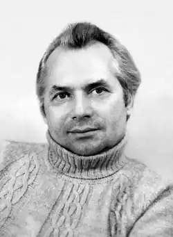
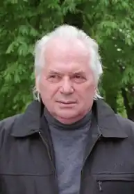
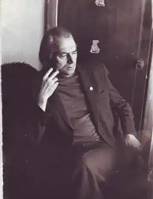

Олег Чорногуз — найвідоміший сучасний український письменник-сатирик, автор першого українського сатиричного роману.
Народився 15.04.1936 у селі Іванів Калинівського р-ну на Вінничині. Після закінчення Івано-Франківської с/ш № 5 вступив до Чернівецького військового училища, але згодом покинув навчання і вступив на факультет журналістики Київського університету ім. Т.Шевченка, який закінчив 1964 року.
Понад 20 років працював у журналі "Перець" — від фейлетоніста до головного редактора. Лауреат премій ім. Остапа Вишні, ім. І.Багряного, ім. О.Гончара та ін. Серед найвідоміших книг письменника: повість "Голубий апендицит" (за яку і автор, і редакція журналу "Прапор" були піддані компартійній критиці, зокрема й у московській "Правді"); книги гумору та сатири "Портрет ідеала", "Сіамський слон", "Веселі поради", "Між нами кажучи", "Сповідь старого холостяка", "Як доглядати Зевса", "Українські колобки" та ін. Сатиричні романи: "Аристократ" із Вапнярки" (написаний 1973, опублікований 1979 р.), "Претенденти на папаху" (1983), "Вавілон на Ґудзоні" (1985), "Я хочу до моря" (1974, знятий з друку, опублікований 1989 р.), "Дари піґмеїв" (2005), "Примхи долі" (2006), "Золотий скарабей" (2007), "Ремезове болото" (2007), "Гроші з неба" (2009), "Твори" (в 2 т., 1986), "Твори" (в 7 т., 2006).